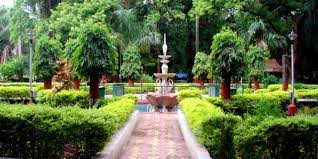

Marine Drive is also known as the Queen's Necklace because, when viewed at night from an elevated point anywhere along the drive, the street lights resemble a string of pearls in a necklace.

Kamala Nehru Park is part of the Hanging Gardens complex in Mumbai, Maharashtra, India covering an area of approximate 16,000 sq.mt.

Jehangir Art Gallery is a large park in South Mumbai, India, which encompasses an area of 1.01 hectares (2.5 acres).

Girgaum Chowpatty beach, also known as Girgaon Chowpatty, is a popular beach located in the Girgaon neighborhood of Mumbai, India.
Girgaum Chowpatty beach, also known as Girgaon Chowpatty, is a popular beach located in the Girgaon neighborhood of Mumbai, India.